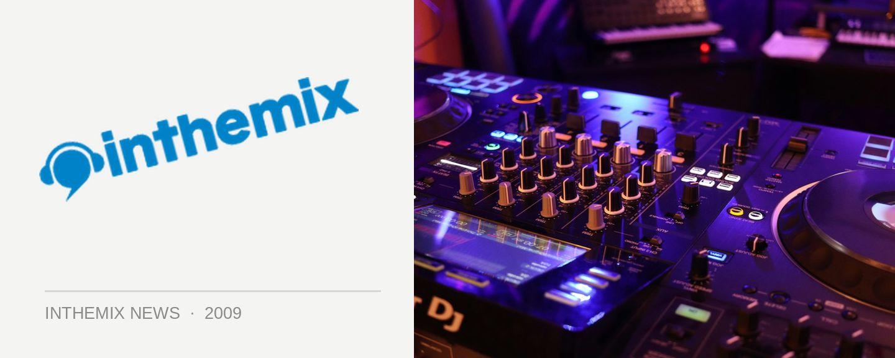

Lights, lasers and hardstyle - the best of Q-dance
The Q-dance brand returned to Sydney’s Hordern Pavilion on Saturday night, bringing with it not only some of the best of the world’s hard dance DJ/producers but also all the spectacle we’ve come to expect from the parties. We got lights, we got lasers, we got flamethrowers, massive visual screens and enough special effects to light up the entire room. Whether you love or loathe hardstyle, there’s no doubt the Dutch know how to throw a good party. Check out the party’s very best on ITM…
> Best Of... The Sounds of Q-dance World Tour, Sydney - The Event
> Best Of... The Sounds of Q-dance World Tour, Sydney - The People
The Q-dance brand will return to Australia this September with the debut of the massive Defqon 1 festival. Stay tuned for all the details as they come to hand, and check out our Festival Page for more Q-dance goodness.